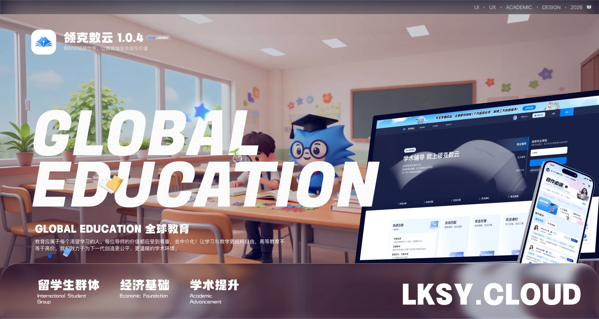
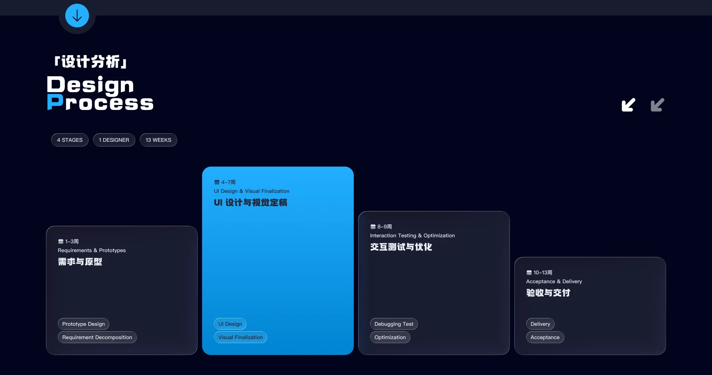
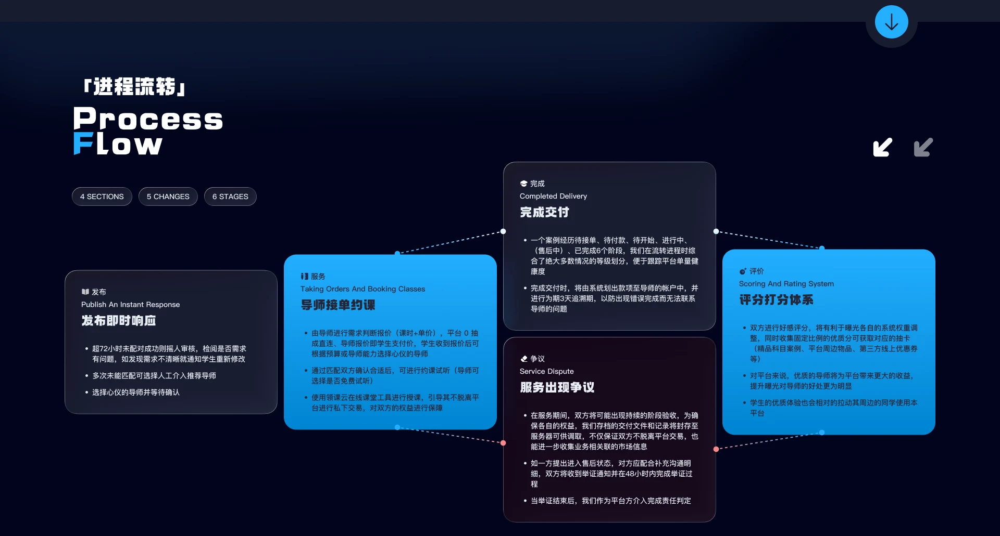
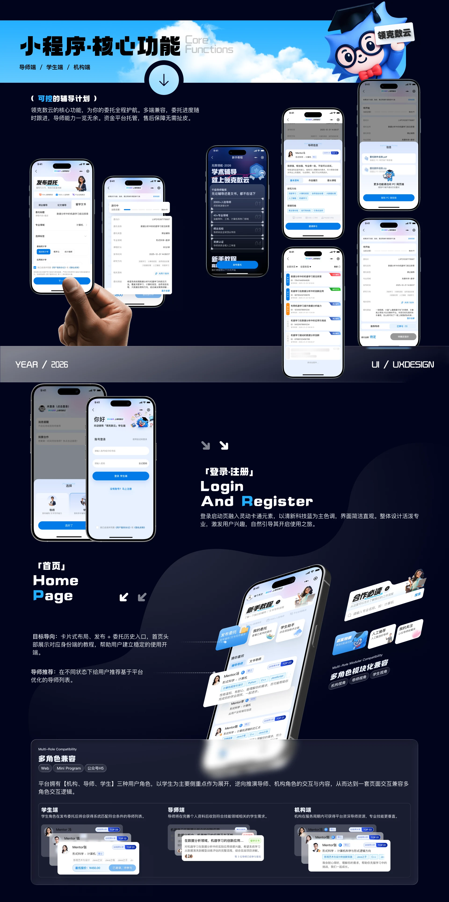
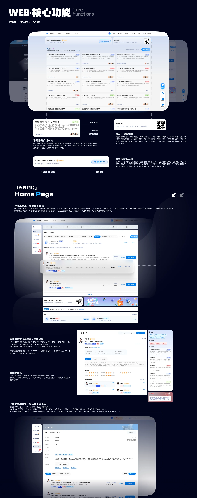
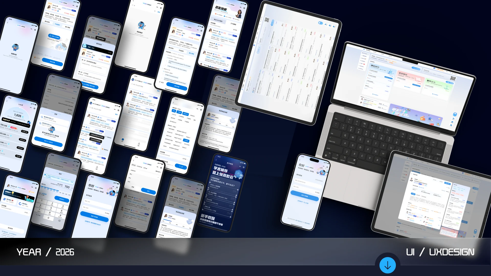

01 / Product Design / 2024 - 2026
LKSY · All Platforms
Bringing academic tutoring back to something transparent and honest.
Overview
Led product design across the whole LKSY ecosystem and built out the company’s VIS brand system. Unified one visual language across web, mini program, H5 and brand identity — a 0-to-1 brand loop.
The problem
In the academic tutoring market, users keep hitting the same three walls: finding the right supervisor is hard, agencies profit from information asymmetry, and study efficiency stays low. This project rebuilt the request-matching mechanism and shaped a feature architecture for fragmented study scenarios, making academic resources genuinely transparent.
My answer
The design turns on one idea: a zero-commission direct connection. Multi-dimensional data visualisation replaces the middleman, so every yuan a student pays reaches the supervisor — while the supervisor side accumulates a public track record. Study activity rose sharply. The loop runs from precise matching through to long-term retention. More than an interface fix, the design work moved the platform from a plain utility toward a sticky academic community that actually converts.
Timeline
- Weeks 1–3: requirements & prototypes
- Weeks 4–7: UI design & visual sign-off
- Weeks 8–9: interaction testing & refinement
- Weeks 10–13: acceptance & delivery
Typography
On mobile, type runs 10pt–16pt (12px–20px on web), with regular and medium carrying most of the page and bold reserved for a handful of spots. Chinese sets in PingFang SC, Latin in Helvetica, and numerics in DIN Pro for weight — Alibaba PuHuiTi for Chinese on web.
Colour system
A tech blue sets the tone: light, advanced, approachable — reinforcing the product as a learning tool rather than another marketplace. It separates us from competitors and leaves room to extend internationally. Brand colour carries buttons and selected screens, with a set of secondary tones keeping the page comfortable to read.
My Role
Led product design and the corporate VIS system, unifying web, mini program, H5 and brand identity into one visual language. Owned visual consistency across platforms and mapped three role systems (institution, teacher, student) to their permission model. Replaced page-by-page mockups with atomic component delivery, so engineering ships from a single spec.
Screens






Other work
- KEKE · IP Design2025.03
- Changting Assistant App2020.01 - 2023.05
- XiaoWo Accessibility Call Assistant2020.01 - 2023.05
- Umeta 2.12023.07 - 2024.02
- Appleland Web2023.07 - 2024.02
- Modeller’s Circle2022.08 - 2023.01
- ZhiPing Smart Screen2021.07 - 2023.01
- Corporate Website Design2020 - 2023
Have something to build?
Available for remote UI/UX design outsourcing and freelance work: B2B dashboards, WeChat mini programs, mobile interfaces, accessibility design, prototypes and design specs.
Email 965333099@qq.com · WeChat and phone 18666099550